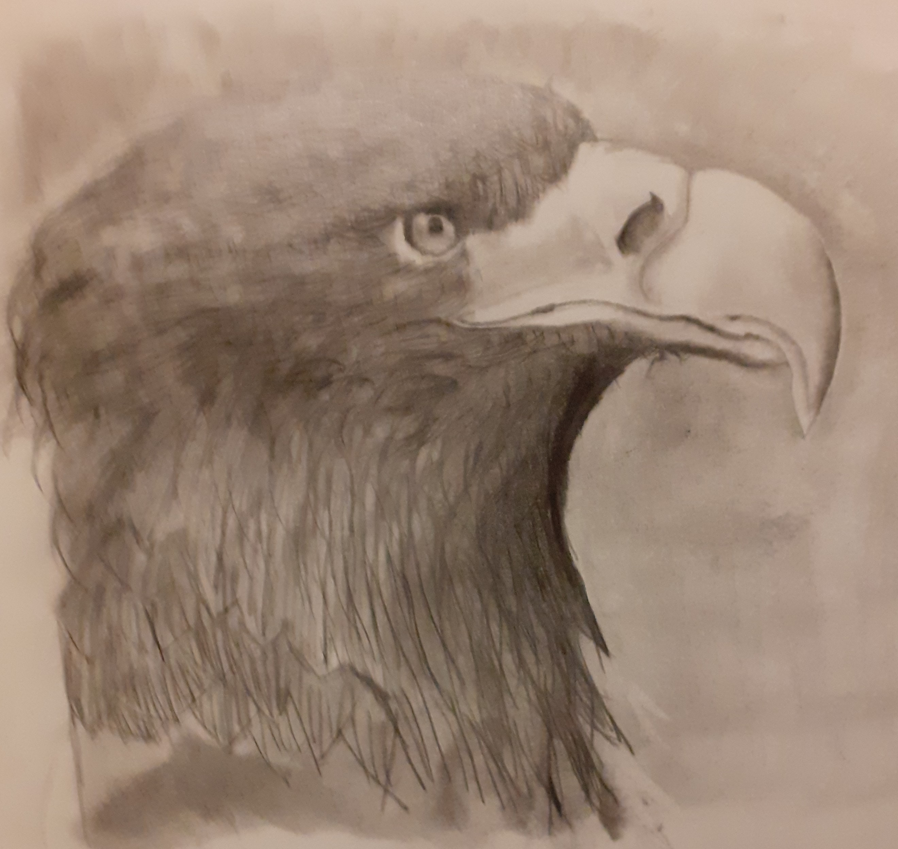
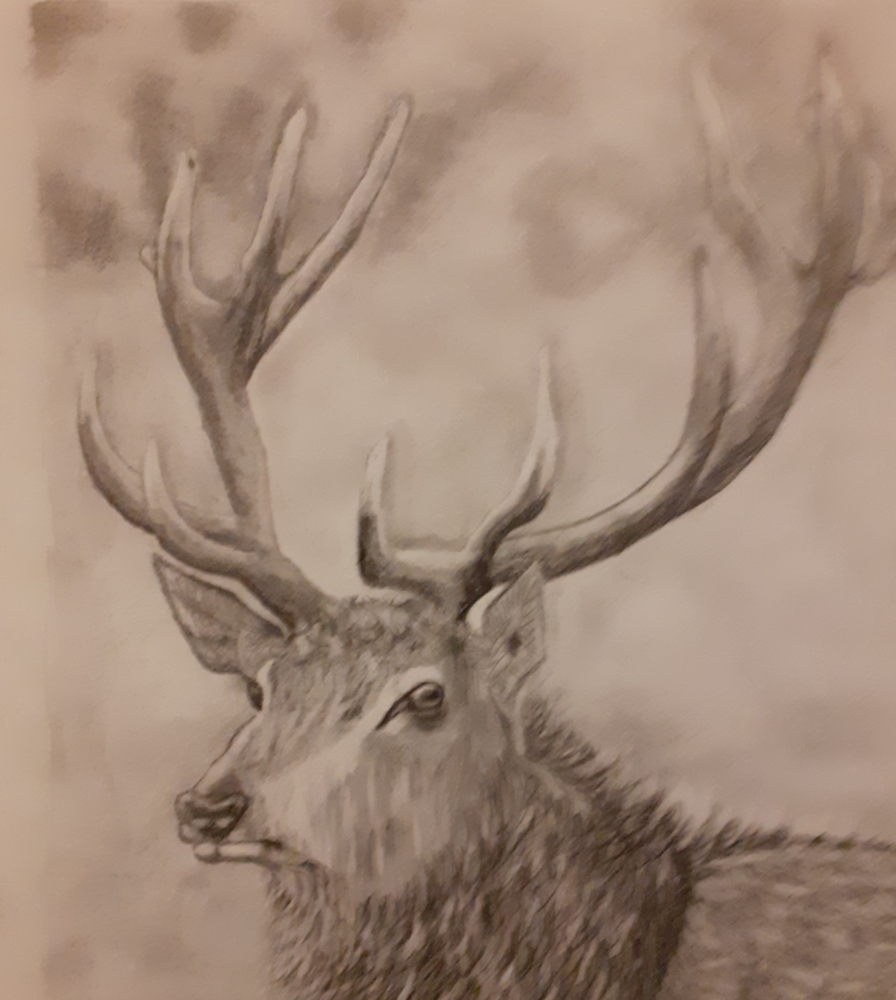

Black Vulture
My sister went to a bird sanctuary and fell in love with Black vultures, even though the head skin looks like elbow skin! nevertheless this was my next inspiration.

Here it is, my first attempt, It's a bit rough but I was so happy with this!!
It looks like a bird at least!
My sister went to a bird sanctuary and fell in love with Black vultures, even though the head skin looks like elbow skin! nevertheless this was my next inspiration.

Ithought i would try a different subject matter, mainly to try out different effects, but actually, i love Deer stags, especially during rutting season!

Not the most exciting of fish, but they do have their charm. This is the first "scene" image, in my other attampts i have focused purely on drawing just a single subject matter without backgrounds(or much of one). maybe i shouldn't have started with an underwater image, and you may be asking, why brown trout? Well! my Dad asked me to draw him some, and that's all there is to it!